I snort, I nap, I cause problems.
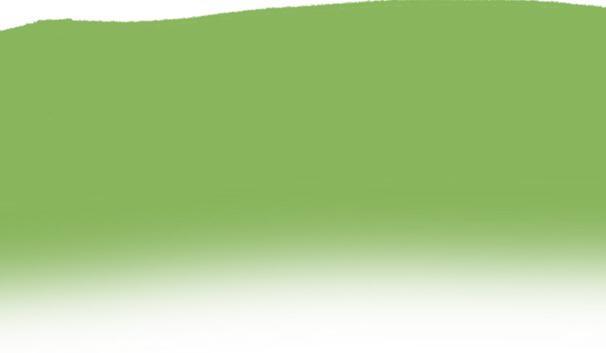
A badly drawn dog with a belly button who snorts too much.
Started as one silly animation, never really stopped.
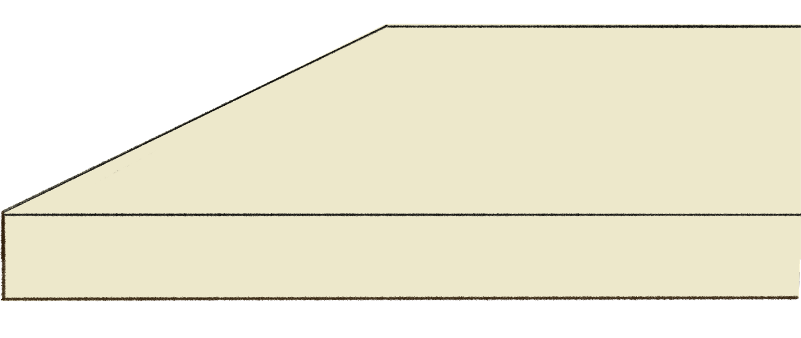
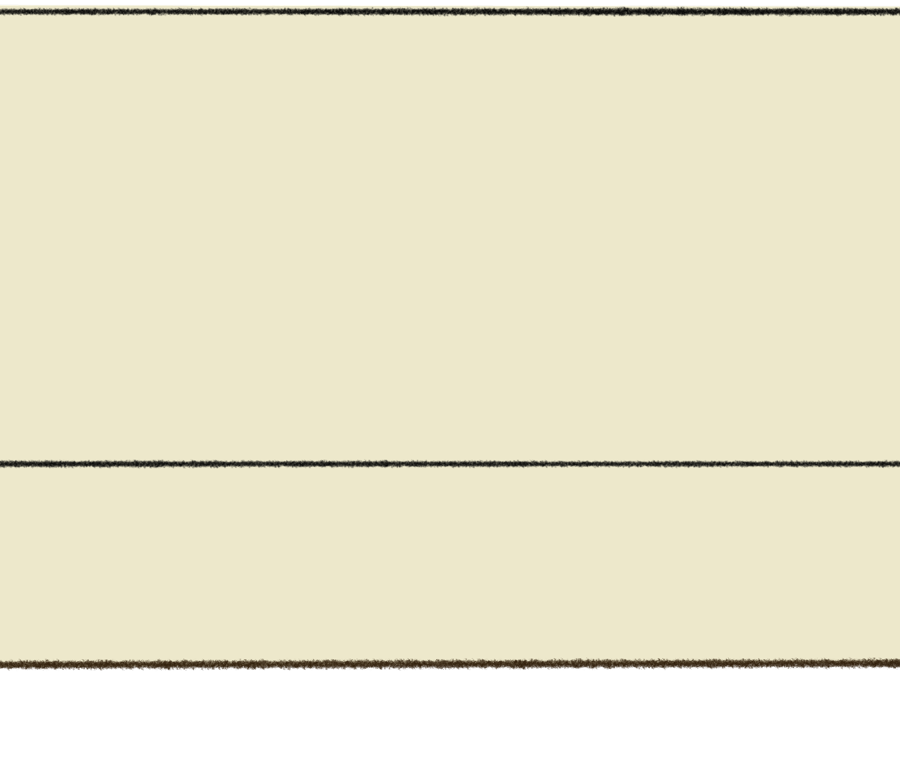
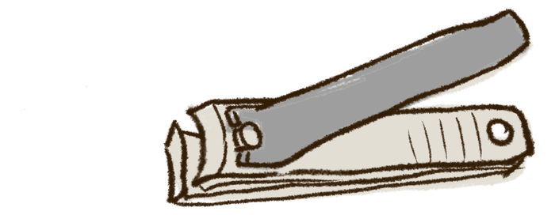
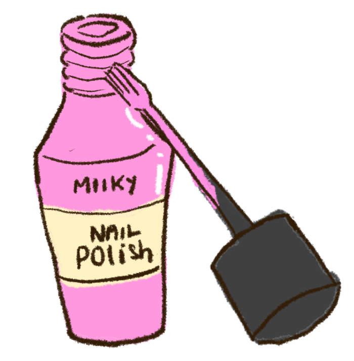
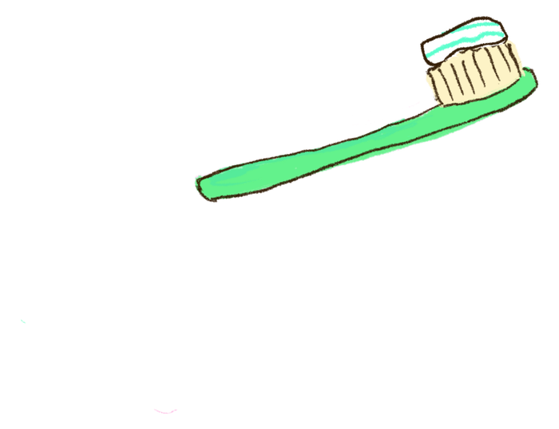
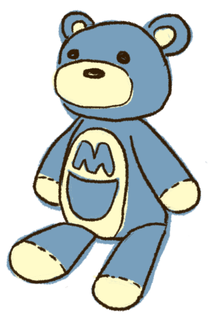
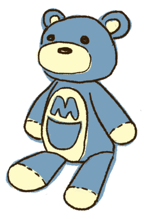
A collection of some of our finest chaos
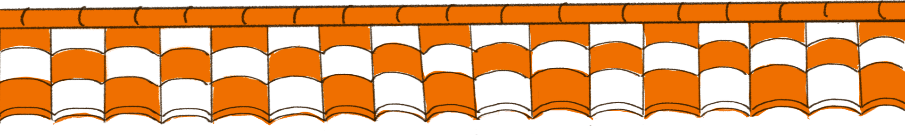
Milky and his friends
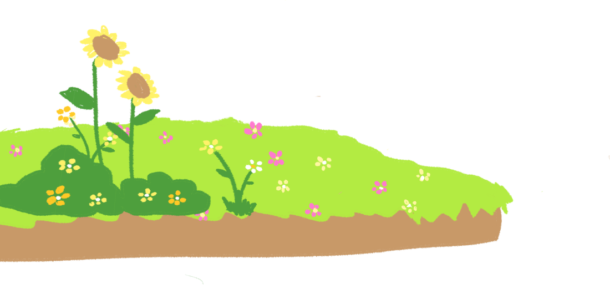
Milky
chaos
Baby
the calm one, allegedly
Princess
certified menace
187K+
humans (and their dogs) follow this chaos
1.6M
views on an average video. We don't know how either.
1 in 6
posts goes viral. Milky remains unbothered.